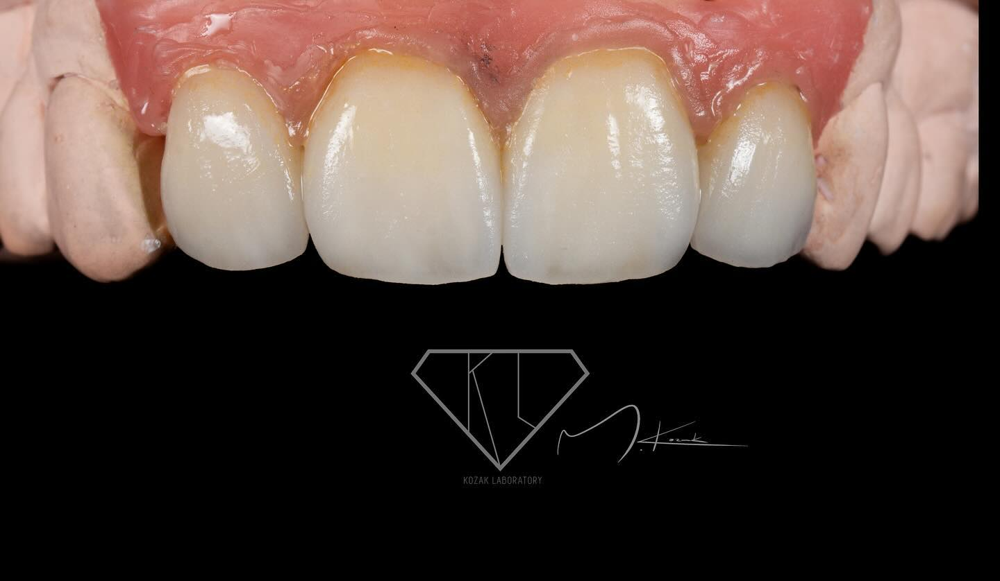

Forma
Proporcje i kontur decydują o tym, jak praca wygląda jako część naturalnego uśmiechu.
MIKOŁAJ KOZAK · DLA GABINETÓW DENTYSTYCZNYCH
Za każdą pracą stoi uważność na formę, kolor i najmniejszy detal. Poznaj Kozak Lab i zobacz, jak wygląda moje rzemiosło.
Fotografia ilustracyjna
Kozak Lab to pracownia Mikołaja Kozaka. W technice dentystycznej liczy się dla mnie całość — od proporcji i koloru po wykończenie, które nadaje pracy naturalny charakter.
Proporcje i kontur decydują o tym, jak praca wygląda jako część naturalnego uśmiechu.
Światło, odcień i subtelne przejścia tworzą efekt, który warto oglądać z bliska.
To ostatnie szlify nadają pracy charakter i spójność z całym przypadkiem.
Przy wyborze współpracy warto zobaczyć prawdziwe realizacje. Poniżej wybrane zdjęcia moich prac; każda fotografia prowadzi do oryginalnego posta.
Otwórz portfolioPrawdziwe realizacje: @kozak_lab

REALIZACJA / 2024Korony i licówki e.maxMiejsce na historie prac, obserwacje z warsztatu i teksty o technologiach, które warto znać. Pierwszy wpis pokazuje format dziennika; jego treść czeka na przegląd Mikołaja.
Krótki przewodnik po informacjach, które pomagają połączyć cyfrowe dane, wybór materiału i oczekiwania estetyczne.
Czytaj artykułPROWADZISZ GABINET LUB MASZ PRACĘ DO OMÓWIENIA?
Opowiedz mi o przypadku lub zapytaj o możliwość współpracy. Możesz skontaktować się ze mną przez Instagram.
Napisz do Kozak Lab